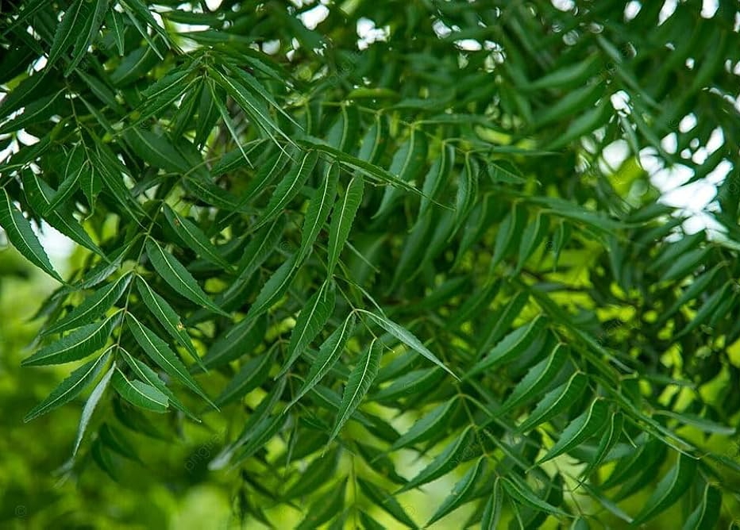

MEDICINAL PLANT
Neem
Azadirachta indica
An evergreen tree of the mahogany family, widely valued for its ecological importance and long history of traditional use.

A CLOSER LOOK
🌿 Features of Neem
Neem is a distinctive evergreen tree with compound leaves, fragrant flowers and olive-like fruits. These features help identify the plant in the field.
Leaves
Neem has compound pinnate leaves made up of several leaflets with serrated edges.
Flowers
The flowers are small, white and fragrant, and usually occur in clusters.
Fruit
Neem produces smooth, olive-like fruits that become yellowish as they mature.
Trunk
The tree develops a strong woody trunk with spreading branches and a broad crown.
BOTANICAL PROFILE
🌱 Neem Characteristics
ECOLOGY & IMPORTANCE
🌳 Ecological Importance
Neem is well adapted to warm and relatively dry environments. Like other trees, it provides habitat and shelter for organisms and contributes to the surrounding ecosystem.
TRADITION & CULTURE
📖 Traditional Uses
Neem has a long history of traditional use in South Asia. Different parts of the tree, including its leaves, bark, seeds and flowers, have been used in traditional practices.